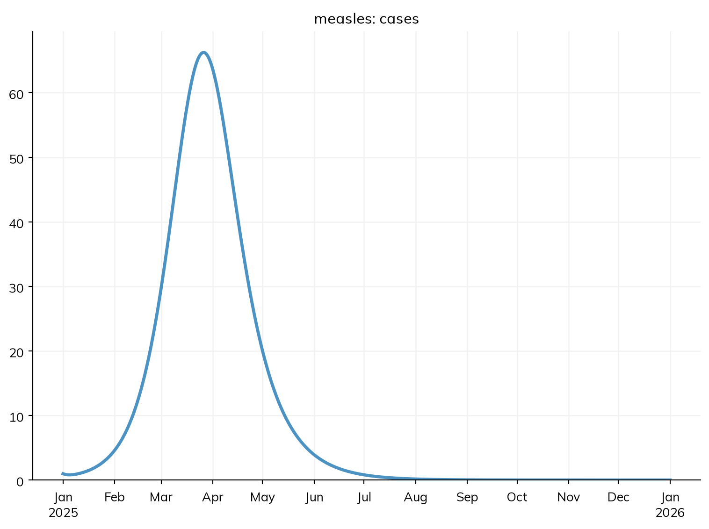
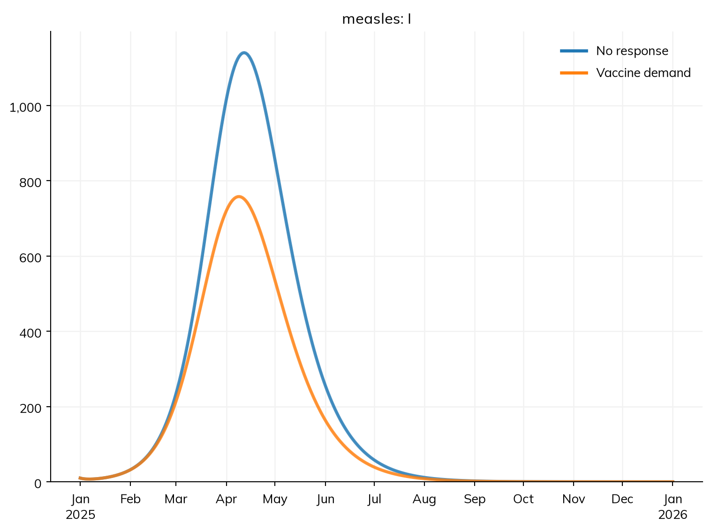
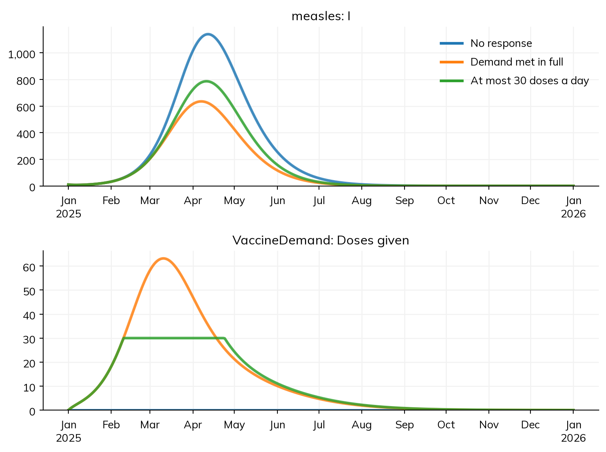
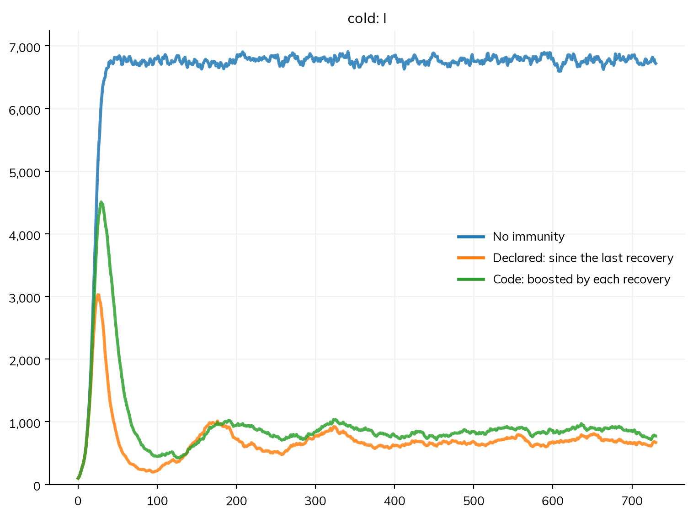
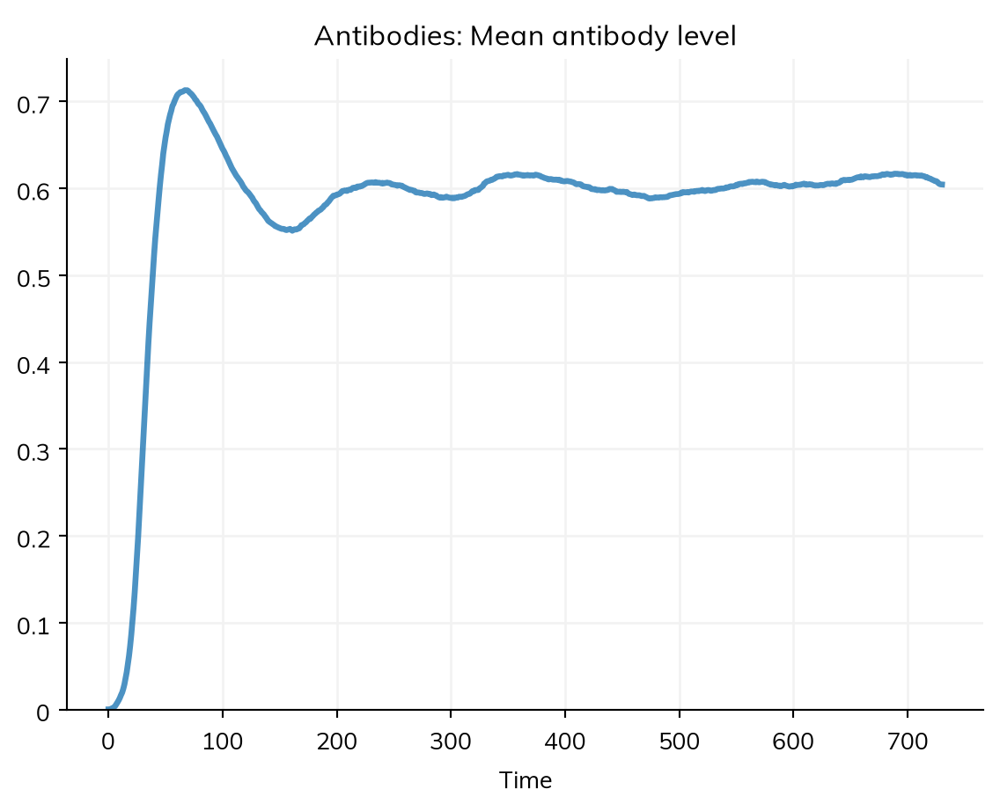
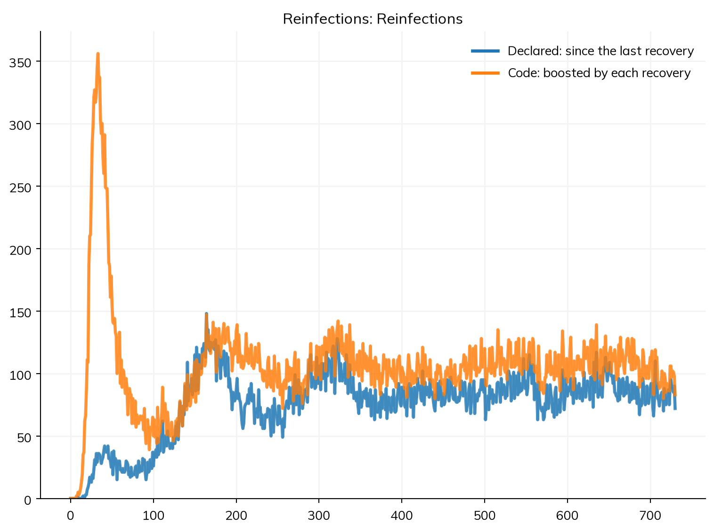
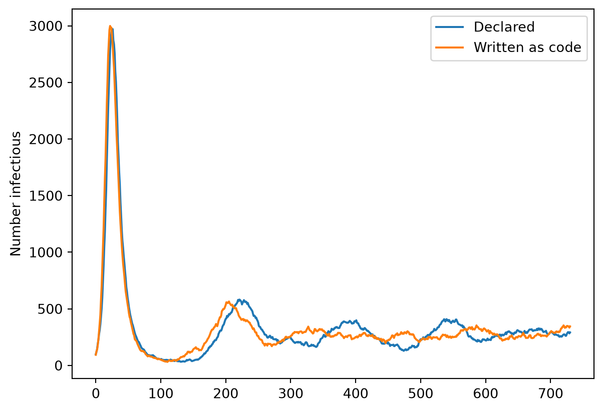
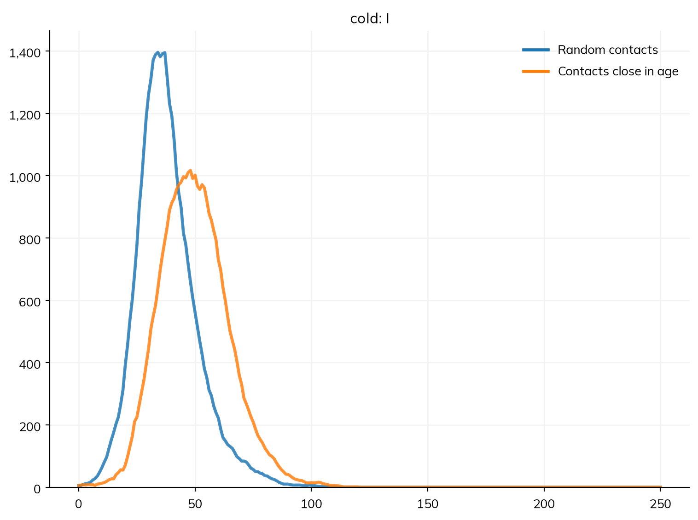

When people hear about an outbreak, some of them go and get vaccinated. How much does that slow the outbreak down, and what limits it?
Most of a Starsim model is declared: its states, transitions, interventions, and results, which run under every solver and which describe() can show. But some things are easier to say in code, such as a rule of behavior, or a quantity with its own dynamics. A module written as code is a Python class with a step() method, which Starsim calls at each step, alongside the declared diseases.
This tutorial first writes a module that keeps numbers for the whole population, vaccine demand, and so still runs as an ODE. It then writes one that has to keep a value for each person, which needs agents, and an analyzer. Advanced sections write a disease and a network as code. By the end of this tutorial, you will be able to:
write a function that Starsim calls at each step, and a module as a class, with parameters, a state of its own, and results;
write a module that keeps a value for each person, and an analyzer;
choose between declaring part of a model and writing it as code.
Before writing a module, check the table at the top of Custom modules: many things that seem to need code (vaccination, testing, treatment, contact tracing, changes to parameters, and protection that depends on the time since an event) can be declared.
Vaccine demand
This is the measles model from T6 – Data and calibration, in a town of 100,000 people in three age groups, with β = 0.16 and 40% of infections reported. These are the values T6’s illustrative data were made with, not the values its fit found (β ≈ 0.17, and about a quarter reported), which fit those data about as well:
import starsim as ssS, E, I, R = ss.states('S E I R')infection = S >> E @0.16*I # β = 0.16 per contact per dayprogression = E >> I @ ss.days(10) # Latent for 10 days on averagerecovery = I >> R @ ss.days(8) # Infectious for 8 days on averagecases = ss.outcome(0.4*infection) # Reported cases: 40% of infectionsmeasles = ss.Disease(infection, progression, recovery, cases,init=dict(R=ss.by(age=[0.8, 0.92, 0.98])), # The fraction immune in each age groupinit_n=dict(I=10), # 10 people infectious at the startname='measles',)measles.stratify(age={0: 0.3, 15: 0.6, 65: 0.1}) # Ages 0-14, 15-64, and 65+contacts = ss.contacts(ages=[0, 15, 65], matrix=[[10, 6, 1], [3, 8, 1], [3, 6, 3]]) # Contacts a day, between age groupssettings =dict(networks=contacts, total_pop=100_000, start='2025-01-01', stop='2026-01-01')sim = ss.Sim(measles, **settings)sim.run()sim.plot('measles.cases')
Sim: measles, 100,000 people, as an ODE, 2025-01-01 to 2026-01-01
measles: R0 = 18.1 (R = 2.81 at the start, with 11% susceptible), with 10 infectious at the start
Note: people do not age between the age groups, since nobody is born or dies; pass aging=True to age them
Done in 0.0043 s; measles: 9,358 infections; at most 1,140 infectious, on 2025-04-12

During measles outbreaks, parents who had put off vaccinating hear about cases and go to a clinic. A simple rule: the rate at which susceptible people seek vaccination rises with the cases reported in the last week, reaching half its highest value (10% a week) at 300 cases a week.
The smallest module written as code is a function of the sim, called once each step; given as interventions=, it becomes an intervention. In it, sim.results has the results so far, and sim.ti is the index of the current time point. ss.move() moves people between a declared disease’s states, the same way under every solver: here, those vaccinated and protected from S to R. to_prob() turns a rate into the chance of an event in one step, 1 − exp(−rate × dt). Two simplifications keep this short: everyone in S is taken to be unvaccinated (the model doesn’t record who was vaccinated), and the vaccine is all or nothing (93% of those vaccinated are fully protected), unlike the leaky vaccine of T5:
defvaccine_demand(sim):""" The unvaccinated seek vaccination at a rate that rises with the cases reported in the last week """ measles = sim.diseases.measles last_week = sim.results.measles.cases[max(sim.ti-7, 0):sim.ti].sum() # Cases reported in the last 7 steps: a week, since each step here is a day frac = last_week/(last_week +300) # From 0 to 1, a half at 300 cases a week seeking = (ss.perweek(0.1)*frac).to_prob(sim.t.dt) # The chance of seeking vaccination in this step ss.move(measles.S, measles.R, p=seeking*0.93) # Those vaccinated and protected become immunereturn
import numpy as npdefvaccine_demand(sim):""" The unvaccinated seek vaccination at a rate that rises with the cases reported in the last week """ measles = sim.diseases.measles last_week = sim.results.measles.cases[max(sim.ti-7, 0):sim.ti].sum() # Cases reported in the last 7 steps: a week, since each step here is a day frac = last_week/(last_week +300) # From 0 to 1, a half at 300 cases a week rate =0.1/7*frac # The rate of seeking vaccination, per day seeking =1- np.exp(-rate*sim.t.dt.days) # The chance of seeking vaccination in this step ss.move(measles.S, measles.R, p=seeking*0.93) # Those vaccinated and protected become immunereturn
MultiSim: 2 runs of 2 scenarios (No response, Vaccine demand)
Done in 0.9 s
Solver: ode

The sim still runs as an ODE, since the function keeps nothing for each person. But the function’s numbers are fixed inside it, it has no results (so how many doses were given?), and it forgets a case abruptly after 7 days.
A module as a class
A module written as a class fixes all three. It inherits from one of Starsim’s module types (here ss.Intervention), so that it runs at the right point in each step:
Parameters, with defaults in __init__() via define_pars(), changed by name when the module is made. Rates and durations are time parameters, so they mean the same whatever the step length.
A state of its own: here, one number, the cases people remember. Each step adds the new reported cases and forgets a fraction of what is remembered, so a case is remembered for memory (30 days) on average: a small ODE of its own, dM/dt = cases − M/memory.
Results of its own, defined in init_results() and filled in each step at self.ti: the doses given in each step (a flow), and the cases remembered (a stock).
A step() method, which does the work. In it, self.sim is the sim, self.t.dt the step length, and self.pars the parameters.
A limit: clinics can give at most capacity doses a day (no limit by default); people who can’t be served try again the next day.
classVaccineDemand(ss.Intervention):""" Unvaccinated people seek vaccination at a rate that rises with the outbreak cases they remember """def__init__(self, memory=ss.days(30), half=300, max_rate=ss.perweek(0.1), capacity=None, efficacy=0.93, **kwargs):super().__init__()self.define_pars(memory= memory, # How long a reported case is remembered, on averagehalf= half, # The number of cases remembered at which demand is half its highestmax_rate= max_rate, # The highest rate at which unvaccinated people seek vaccinationcapacity= capacity, # The most doses the clinics can give, as a rate (None for no limit)efficacy= efficacy, # The fraction of those vaccinated who are fully protected (all or nothing) )self.update_pars(**kwargs)self.remembered =0.0# The cases that people remember, for the whole populationreturndefinit_results(self):super().init_results()self.define_results( ss.Result('doses', kind='flow', scale=False, label='Doses given'), ss.Result('remembered', kind='stock', scale=False, label='Cases remembered'), )returndefstep(self): measles =self.sim.diseases.measles dt =self.t.dt# Remember the cases reported in the last step (there is none before the first), and forget a fraction of those remembered new_cases =self.sim.results.measles.cases[self.ti-1] ifself.ti >0else0self.remembered += new_cases -self.remembered*(dt/self.pars.memory)# The doses sought by those in S (all taken to be unvaccinated), limited by what the clinics can give frac =self.remembered/(self.remembered +self.pars.half) seeking = (self.pars.max_rate*frac).to_prob(dt) doses = seeking*measles.S.nifself.pars.capacity isnotNone: doses =min(doses, self.pars.capacity.to_events(dt))# Those protected become immune ss.move(measles.S, measles.R, n=doses*self.pars.efficacy)self.results.doses[self.ti] = dosesself.results.remembered[self.ti] =self.remembered # Recorded here, where it changes: the cases remembered in this stepreturn
measles.S.n is the number of people in S now (and measles.S.frac the fraction), under every solver, and ss.move(..., n=...) moves a number of people rather than a fraction. A module that is not a disease steps before the diseases, so it reads the last step’s cases (self.ti-1), and what it does applies to this step’s transmission. (A stock is usually recorded in record_states(), at the start of a step; remembered is recorded in step() instead, since that is where it is updated, so each value is the memory that step used.) The sim works on its own copy of each module, so reach other modules through self.sim, not a variable from outside the class. The module’s results are under its class name in lower case, sim.results.vaccinedemand. Custom modules lists when Starsim calls each method.
With parameters, one module serves every scenario: no response (a highest rate of 0), demand met in full, and clinics that can give at most 30 doses a day:
sims = {'No response': ss.Sim(measles, interventions=VaccineDemand(max_rate=ss.perweek(0)), **settings),'Demand met in full': ss.Sim(measles, interventions=VaccineDemand(), **settings),'At most 30 doses a day': ss.Sim(measles, interventions=VaccineDemand(capacity=ss.perday(30)), **settings),}msim = ss.parallel(sims)msim.plot(['measles.I', 'vaccinedemand.doses'])msim.summarize().loc[['measles_infection', 'vaccinedemand_doses']]
MultiSim: 3 runs of 3 scenarios (No response, Demand met in full, At most 30 doses a day)
Done in 1.0 s

value
result
scenario
measles_infection
No response
9,358
Demand met in full
5,397
At most 30 doses a day
6,579
vaccinedemand_doses
No response
0
Demand met in full
4,916
At most 30 doses a day
3,750
Met in full, demand prevents about 4,000 of 9,400 infections, but less than half, since it starts only once the outbreak is under way. With at most 30 doses a day, people waiting during the steep rise, when each dose matters most, are often infected. Its parameters can be fitted to data (T6) if given as ss.par with bounds, e.g. VaccineDemand(half=ss.par(300, bounds=[50, 2000])).
A value for each person
The demand module keeps one number for the whole town. Some things belong to each person. For many respiratory infections, protection depends on past infections: antibodies rise with each one and decline in between. Protection that depends only on the time since the last recovery can be declared (as below), but a level boosted by every infection depends on each person’s whole history, so a module has to keep it, for each person.
This section uses a generic cold, an SIS model with no immunity of its own, as agents (R0 = 0.4 × 7 = 2.8, with one contact a day):
import numpy as npS, I = ss.states('S I')cold = ss.Disease(infection= S >> I @0.4*I, # A rate of infection of 0.4 per contact per dayrecovery= I >> S @ ss.days(7), # Infectious for 7 days on average, then susceptible againinit_prev=0.01,name='cold',)pars =dict(networks=ss.MixingPool(n_contacts=1), n_agents=10_000, stop=ss.days(2*365), verbose=0)
The module holds each person’s antibody level, which rises by boost at each recovery, up to 1, and halves every half_life. It is an ss.Module, being neither a disease nor an intervention, and reads who recovered in the last step from the declared disease (recovery.uids). Besides parameters, results, and step(), it has:
A state for each person, declared with define_states(): here ss.FloatArr, a number for each agent (ss.BoolState is true or false, and ss.TimeArr a time). It grows as agents are born; keep values for each person this way, never in a NumPy array of your own. Array indexing covers reading and writing them by UID.
A stock recorded in record_states(), at the start of each step, so that each value is the level at its time point.
Anything random should come from a Starsim distribution, not np.random, so that results stay reproducible (Random numbers); this module has nothing random.
classAntibodies(ss.Module):""" Each person's antibody level: boosted by each recovery, up to 1, and halving every half_life in between """def__init__(self, half_life=ss.days(90), boost=0.5, **kwargs):super().__init__()self.define_pars(half_life= half_life, # How quickly antibodies declineboost= boost, # The rise in the level at each recovery )self.update_pars(**kwargs)self.define_states( ss.FloatArr('level', default=0.0, label='Antibody level'), )returndefinit_results(self):super().init_results()self.define_results( ss.Result('mean_level', label='Mean antibody level', kind='ratio'), # A mean (a ratio), so not scaled by the number of people per agent )returndefstep(self): decay =0.5**(self.t.dt/self.pars.half_life) # The fraction left after one stepself.level[:] =self.level*decay recovered =self.sim.diseases.cold.recovery.uids # Those who recovered in the last stepself.level[recovered] = np.minimum(1.0, self.level[recovered] +self.pars.boost)returndefrecord_states(self):super().record_states()self.results.mean_level[self.ti] =self.level.mean() # The level at the start of the stepreturn
The module keeps the level, and a modifier says what it does: it multiplies each person’s susceptibility by what the antibodies leave of it. A modifier never overwrites what it changes, and describe() lists it as part of the model. For comparison, protection that halves every 90 days after the last recovery, with no boosting, is declared in one line:
defsusceptibility(sim):""" Each person's susceptibility: 1 minus their antibody level """return1- sim.custom.antibodies.levelby_antibodies = ss.modify(cold.rel_sus, multiply=susceptibility)by_recovery = ss.modify(cold.rel_sus, multiply=1-0.5**(cold.recovery.since/ss.days(90))) # Declared: full protection at recovery, halving every 90 days sincesims = {'No immunity': ss.Sim(cold, **pars),'Declared: since the last recovery': ss.Sim(cold, connectors=by_recovery, **pars),'Code: boosted by each recovery': ss.Sim(cold, Antibodies(), connectors=by_antibodies, **pars),}msim = ss.parallel(sims)msim.plot('cold.I')

Either form of immunity cuts the endemic level to about a tenth of that with no immunity. With boosting, one infection gives only half protection, so the first wave is larger, and protection builds up only with repeated infections; the declared form gives full protection at every recovery. They are different assumptions about immunity, and only the one with boosting needed code. The module’s own result is under its name:
msim.sims['Code: boosted by each recovery'].results.antibodies.mean_level.plot()

A module that keeps a value for each person needs agents, so a sim with one runs as agents, including its declared diseases, unchanged.
An analyzer
An analyzer records something without changing the model; it is the kind of module most models write. It runs at the end of each step, after the diseases, so it sees what happened in that step. This one counts how many times each person is infected, and the reinfections in each step; finalize_results(), called once at the end of the run, works out the mean number of infections of those ever infected:
classReinfections(ss.Analyzer):""" The number of times each person is infected, and the reinfections in each step """def__init__(self, **kwargs):super().__init__(**kwargs)self.define_states( ss.FloatArr('times_infected', default=0, label='Times infected'), )returndefinit_results(self):super().init_results()self.define_results( ss.Result('reinfections', kind='flow', label='Reinfections'), )returndefstep(self): new =self.sim.diseases.cold.infection.uids # Those infected in this stepself.results.reinfections[self.ti] = np.count_nonzero(self.times_infected[new] >0)self.times_infected[new] +=1returndeffinalize_results(self):super().finalize_results() ever =self.times_infected >0self.mean_times =self.times_infected[ever].mean() # Among those ever infectedreturn
Analyzers are given as analyzers=, and their results are under their name, as for any module:
sims = {'Declared: since the last recovery': ss.Sim(cold, connectors=by_recovery, analyzers=Reinfections(), **pars),'Code: boosted by each recovery': ss.Sim(cold, Antibodies(), connectors=by_antibodies, analyzers=Reinfections(), **pars),}msim = ss.parallel(sims)msim.plot('reinfections.reinfections')for label, sim inzip(sims, msim.sims):print(label, '- infections per person ever infected:', round(sim.analyzers.reinfections.mean_times, 1))

Declared: since the last recovery - infections per person ever infected: 6.5
Code: boosted by each recovery - infections per person ever infected: 8.8
With boosting, people ever infected are infected about 9 times in two years, against about 6 or 7 times with full protection at each recovery: with a cold every few months, the antibodies settle at about half, rarely building up to full protection. Analyzers has more, including the infection log, which records who infected whom.
Advanced: a disease written as code
A disease can be written as code too: to keep a Starsim 3 model as it was, or when its course is easiest to say step by step. In T3, waning immunity was one more declared transition, R >> S. Here is the same SIRS model written as code, inheriting from a template and changing only what differs. ssl.AgentSIR is the SIR model written as code (Starsim 3’s ss.SIR); its states are per-agent arrays, susceptible, infected, and recovered, and its methods move agents between them:
import numpy as npimport matplotlib.pyplot as pltimport starsim.library as sslclassSIRS(ssl.AgentSIR):def__init__(self, pars=None, *args, **kwargs):super().__init__()self.define_pars(dur_imm= ss.expon(mean=ss.days(180)), # How long immunity lasts after recovery )self.update_pars(pars, **kwargs)# SIR states are added automatically; here we add the time of losing immunityself.define_states( ss.TimeArr('ti_susceptible', label='Time of becoming susceptible again'), )returndefset_progression(self, uids):""" Schedule recovery and death as usual, then schedule the waning of immunity """super().set_progression(uids) recovering = uids[np.isfinite(self.ti_recovered[uids])] # Agents who are going to die have ti_recovered = NaNself.ti_susceptible[recovering] =self.ti_recovered[recovering] +self.pars.dur_imm.rvs(recovering)returndefstep_state(self):""" Do the usual SIR transitions, then return agents whose immunity has waned to susceptible """super().step_state() waning = (self.recovered &self.ti_susceptible.due()).uids # Those whose time has comeself.recovered[waning] =Falseself.susceptible[waning] =Truereturn
__init__() adds the extra parameter and state; set_progression() does the usual scheduling, then draws a waning time for everyone who will recover; and step_state() adds the recovered → susceptible transition. Here it is next to the declared SIRS, with the same R0 (0.4 per day × 7 days = 2.8). A disease written as code transmits over the sim’s networks, so both get a mixing pool with one contact a day:
coded =SIRS(beta=ss.perday(0.4), dur_inf=ss.expon(mean=ss.days(7)), p_death=0, init_prev=0.01, name='cold')S, I, R = ss.states('S I R')declared = ss.Disease(infection= S >> I @0.4*I, # A rate of infection of 0.4 per contact per dayrecovery= I >> R @ ss.days(7),waning= R >> S @ ss.days(180),init_prev=0.01,name='cold',)pars =dict(networks=ss.MixingPool(n_contacts=1), n_agents=10_000, stop=ss.days(2*365), verbose=0)sim_coded = ss.Sim(coded, **pars)sim_declared = ss.Sim(declared, **pars)sim_coded.run()sim_declared.run()plt.figure()plt.plot(sim_declared.results.cold.timevec, sim_declared.results.cold.I, label='Declared')plt.plot(sim_coded.results.cold.timevec, sim_coded.results.cold.infected, label='Written as code')plt.ylabel('Number infectious')plt.legend();

The two give the same epidemic up to chance. What differs is what Starsim knows about them: the declared disease can be shown (describe(), diagram(), equations()), run under every solver, and fitted with sim.fit(), while the coded one runs only as agents. So if a model can be declared, declare it; write a disease as code when its course is easier to say in code, or to keep a Starsim 3 model as it was (a Starsim 3 subclass of ss.SIR can subclass ssl.AgentSIR unchanged).
Advanced: a network written as code
The networks of T4 pair people at random, or as partners. Suppose instead that people mostly meet others of a similar age, and you want to check what that does to an epidemic of a cold. A network written as code subclasses ss.Network and overrides how edges are made: add_pairs() makes them, step() here replaces each day’s contacts, and self.append() adds edges, as the UIDs of the two people in each (p1 and p2). To pair people of similar ages, sort them by age plus a little random noise, and connect each person with their neighbors in that order:
classAgeNet(ss.Network):""" Contacts each day with people close in age """def__init__(self, n_contacts=4, spread=ss.years(2), **kwargs):super().__init__()self.define_pars(n_contacts= n_contacts, # The number of contacts each person has each day (an even number)spread= spread, # How far apart in age contacts tend to be )self.update_pars(**kwargs)self.noise = ss.normal(0, 1) # A Starsim distribution, so that the draws are reproduciblereturndefadd_pairs(self): uids =self.sim.people.alive.uids age =self.sim.people.age[uids] +self.pars.spread.years*self.noise.rvs(uids) # Each person's age, blurred a little order = uids[np.argsort(age, kind='stable')] # Everyone, from youngest to oldest p1, p2 = [], []for k inrange(1, self.pars.n_contacts//2+1): # Each person, with the k-th next person in the order p1.append(order[:-k]) p2.append(order[k:]) p1 = np.concatenate(p1) p2 = np.concatenate(p2)self.append(p1=p1, p2=p2, weight=np.ones(len(p1)))returndefstep(self):self.remove_edges(np.ones(len(self), dtype=bool)) # Yesterday's contacts end...self.add_pairs() # ...and today's beginreturn
Check that a network makes what you meant: contacts of nearly the same age, about 4 per person:
S, I, R = ss.states('S I R')cold = ss.Disease(infection=S >> I @0.1*I, # A rate of infection of 0.1 per contact per day: with 4 contacts, R0 = 0.1 × 4 × 7 = 2.8recovery=I >> R @ ss.days(7), init_prev=0.001, name='cold')pars =dict(n_agents=5000, stop=ss.days(250), verbose=0)sim = ss.Sim(cold, networks=AgeNet(), **pars)sim.init()df = sim.networks.agenet.to_df()age = sim.people.ageprint('Correlation of the ages of contacts:', round(np.corrcoef(age[ss.uids(df.p1)], age[ss.uids(df.p2)])[0, 1], 3))print('Contacts per person:', round(2*len(df)/len(sim.people), 2))
Correlation of the ages of contacts: 0.992
Contacts per person: 4.0
Compared with a random network with the same number of contacts:
sims = {'Random contacts': ss.Sim(cold, networks=ss.RandomNet(n_contacts=4), **pars),'Contacts close in age': ss.Sim(cold, networks=AgeNet(), **pars),}msim = ss.parallel(sims)msim.plot('cold.I')

Contacts close in age give a slower, flatter epidemic, since each case’s contacts overlap with those of whoever infected them. A contact matrix with many narrow age groups would give much the same, under every solver (T4); a network written as code is worth it when the rule is about individuals, such as who is in which household or partnership.
Which to use
What you write
What Starsim still does
What is given up
Declared
States, transitions, deliveries, modifiers
Everything: describe(), every solver, fitting
Nothing, if it can say what you need
Declared, with a little code
A function of the sim as a rate, a condition, or a modifier’s amount
Results, solvers that can take the function, fitting
Speed (the function runs once a step), and showing what the function does
A module written as code
A class with step() (and states, results, parameters)
Time, people, random numbers, parallel runs, its results
Showing what the module does, and solvers other than agents if it keeps a value for each person
The same, and transmission over the sim’s networks
The same, and fitting its structure
Start declared, and move down the table only for the part that needs it. When code is slow because it loops over agents, @ss.jit compiles a function with Numba. Custom modules covers the order in which Starsim calls a module’s methods, demographics and connectors written as code, and pitfalls.
Exercises
How much does it matter how long people remember cases? Run VaccineDemand() with a memory of 10 days and of 90 days, and compare the infections and doses with 30 days. Does each extra dose prevent as many infections as the ones before? Why not?
People who hear about an outbreak may also avoid others. Add a modifier, ss.modify(measles.rel_sus, multiply=...), whose multiply= is a function of the sim returning 1 − 0.3 × the fraction used for demand (so contacts fall by up to 30%), reading the cases remembered as sim.interventions.vaccinedemand.remembered. How much smaller is the outbreak?
Run the model with demand met in full as agents, one for each person (n_agents=100_000), and compare the infections and doses with those of the ODE. Does the module need any change? Why not?
Change the half-life of the antibodies to 30 days and to 365 days. How does each change the endemic level of infection, compared with no immunity? What does a boost of 1 (full protection after every infection) do?
(Advanced) The SIRS class schedules each person’s loss of immunity at recovery. Write an SIRS in which immunity is lost instead with a constant chance each step (an exponential duration, drawn step by step), using an ss.bernoulli distribution in step_state(). Does it give the same epidemic?
(Advanced) Give AgeNet a parameter p_random, the fraction of each person’s contacts that are with anyone at random rather than with people close in age (hint: shuffle a fraction of the order before pairing, or add a second, random network). How large does it have to be before the epidemic looks like the one with random contacts?